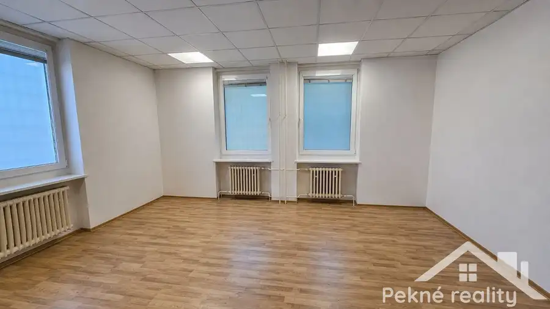

Prenájom · Komerčné priestory
Prenájom kancelárskeho priestoru v centre mesta Zvolen
Zvolen
Cena na vyžádání

- Plocha46.1 m²
- StavČiastočná rekonštrukcia
- VlastníctvoFiremné
O nehnuteľnosti
Ponúkame Vám na prenájom kancelársky priestor nachádzajúci sa v centre mesta Zvolen, na ulici V. P. Tótha.Je situovaný na zvýšenom prízemí budovy a jeho úžitková plocha je 46,10 m2. Toalety sú k dispozícii na spoločnej chodbe.V budove, kde sa priestor nachádza je optický internet, poštové schránky a strážna služba.Cena za prenájom: 507€/mesiac vrátane energií a služieb (kúrenie, vývoz smetí) + elektrina, ktorá sa účtuje podľa spotreby nájomcu.Pre viac informácií neváhajte kontaktovať našu realitnú kanceláriu Pekné reality, s.r.o., A. Sládkoviča 91/7, Zvolen.Tel: 0908 440 790, email: belkova@peknereality.sk.
Parametre
- Bezpečnosť
- Strážna služba
- Doprava
- MHD, Cesta, Vlak
- Druh
- Kancelárie, administratívne priestory
- Dátum zverejnenia
- 05. 08. 2026
- Energetický certifikát budovy
- nie je
- Počet izieb / miestností
- 1
- Prístupová komunikácia
- Asfaltová
- Stav nehnuteľnosti
- Čiastočná rekonštrukcia
- Telekomunikácie
- Optická sieť
- Typ
- Prenájom
- Typ konštrukcie
- Tehlová
- Vlastníctvo
- Firemné
- Vybavenie
- Výťah, Vonkajšie parkovacie miesto
- Vykurovanie
- Ústredné
- Úžitková plocha
- 46.1 m²
Kde to je


Ďalšie ponuky
Celá ponukaMohlo by Vás zaujímať
 BytNové
129 000 €Na predaj priestranný 2 izbový byt s balkónom a možnosťou úpravy na 2,5 izbový byt - Zvolen, ul. Ľ Fullu
Zvolen
2-izbový60.71 m²4. podlažie
BytNové
129 000 €Na predaj priestranný 2 izbový byt s balkónom a možnosťou úpravy na 2,5 izbový byt - Zvolen, ul. Ľ Fullu
Zvolen
2-izbový60.71 m²4. podlažie
 BytNové
166 000 €Predaj 4-izbového bytu v pôvodnom stave - Zvolen Západ, Nográdyho ul.
Zvolen
4-izbový73.89 m²1. podlažie
BytNové
166 000 €Predaj 4-izbového bytu v pôvodnom stave - Zvolen Západ, Nográdyho ul.
Zvolen
4-izbový73.89 m²1. podlažie
 Záhradná chatkaNové
38 000 €Predaj záhradnej chatky - Zvolen-Sekier
Zvolen
30 m²
Záhradná chatkaNové
38 000 €Predaj záhradnej chatky - Zvolen-Sekier
Zvolen
30 m²